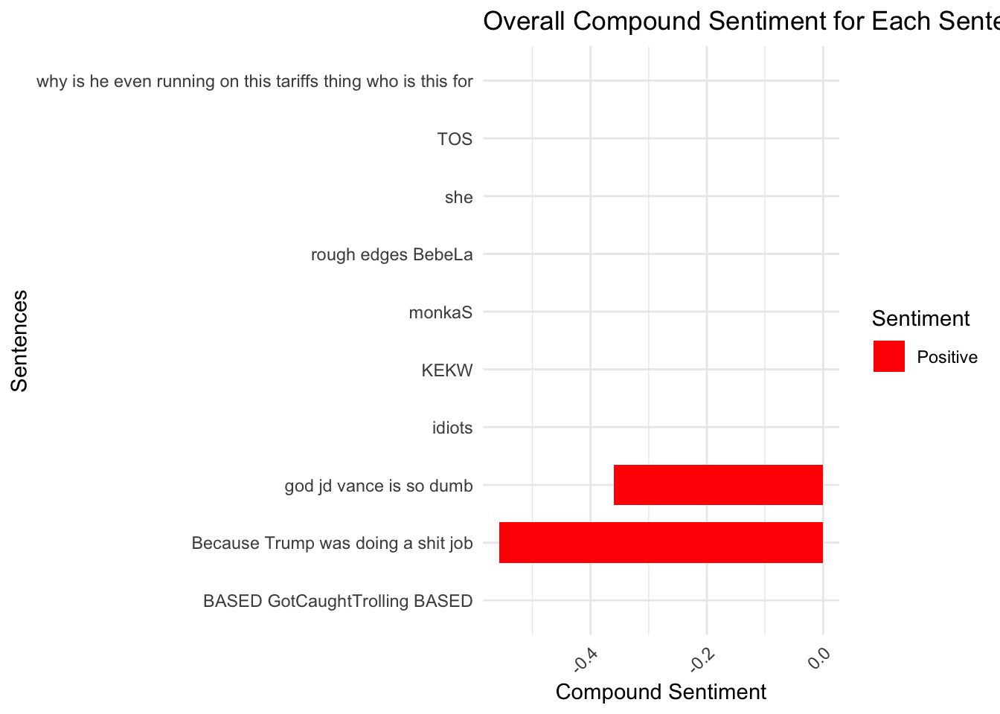
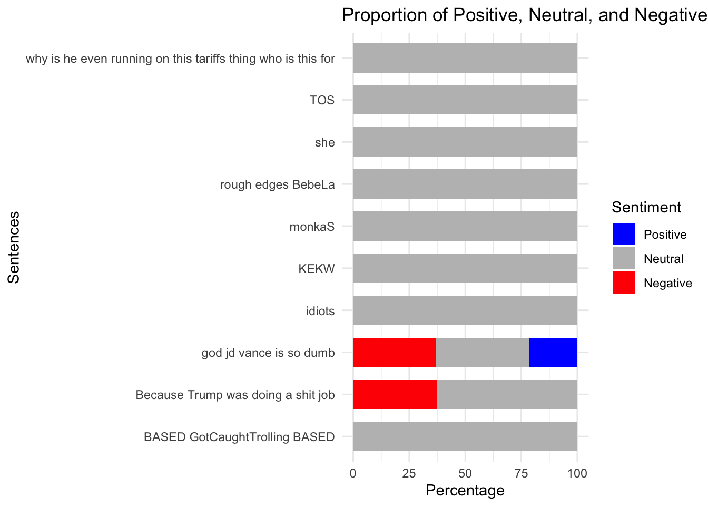
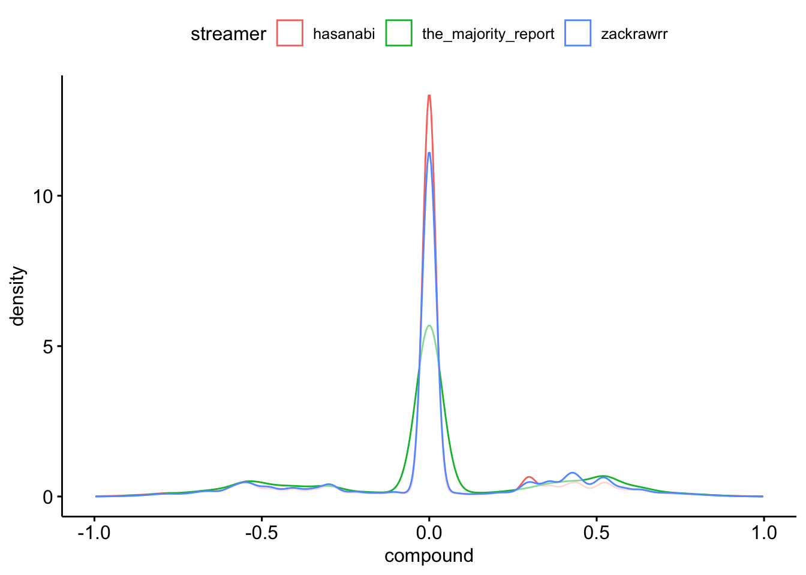
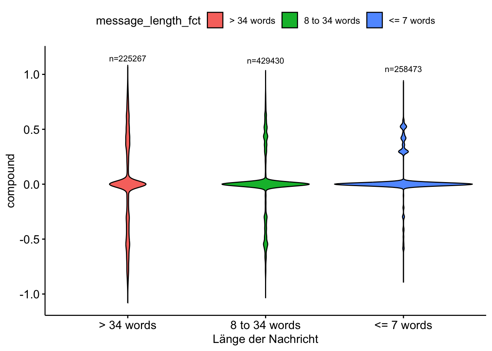
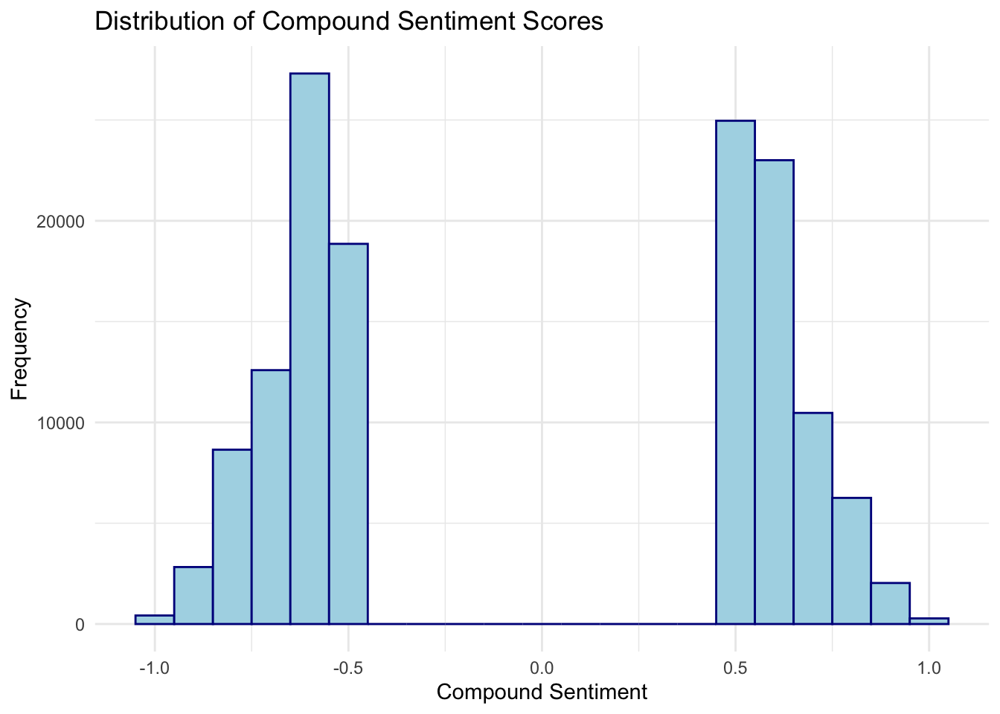
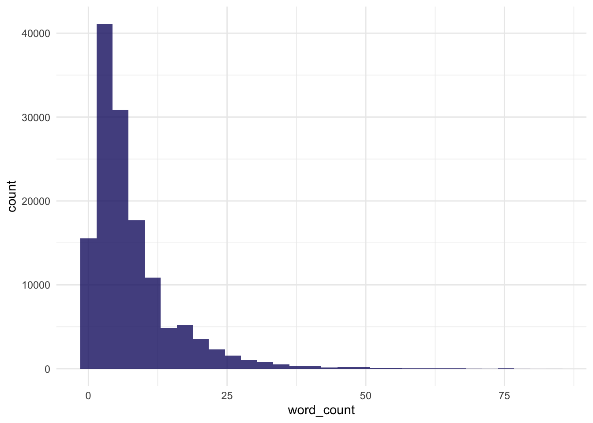
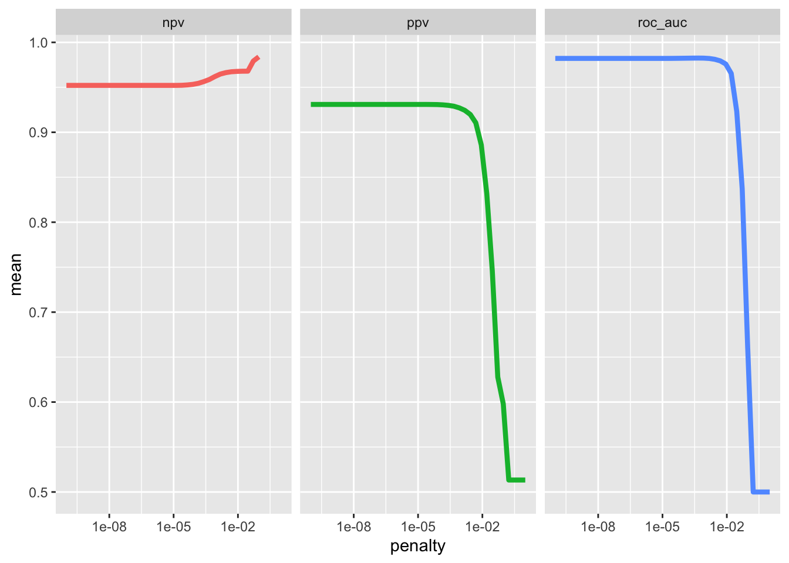
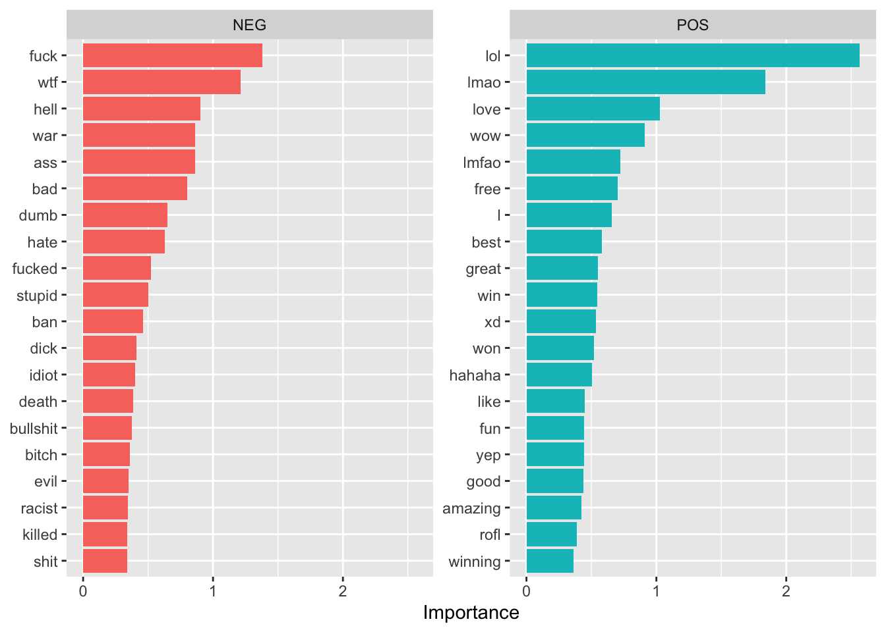

if (!require("pacman")) install.packages("pacman")
pacman::p_load(
here,
magrittr, janitor,
ggpubr, ggdist, ggsci,
gt, gtExtras,
countdown,
quanteda, # quanteda text processing
quanteda.textplots, quanteda.textstats,
quanteda.textmodels, quanteda.sentiment,
ellmer, rollama,
tidymodels,
easystats, tidyverse
)🔨 Sentiment Analysis with R
Tutorial - Session 10
Background
Preparation
# Import base data
chats <- qs::qread(here("local_data/chats.qs"))
corp_chats <- chats %>%
quanteda::corpus(docid_field = "message_id", text_field = "message_content")Codechunks aus der Sitzung
Praktische Anwedung von quanteda.sentiment
chats_polarity <- corp_chats %>%
textstat_polarity(
dictionary = data_dictionary_LSD2015) %>%
rename(polarity = sentiment)chats_polarity %>%
head(n = 10) doc_id polarity
1 dc03b89a-722d-4eaa-a895-736533a68aca 0.000000
2 6be50e12-2fd5-436f-b253-b2358b618380 0.000000
3 f5e41904-7f01-4f03-ad6c-2c0f07d70ed0 1.098612
4 92dc6519-eb54-4c18-abef-27201314b22f -1.098612
5 92055088-7067-48c0-aa11-9c6103bdf4c4 0.000000
6 03ad4706-aa67-4ddc-a1e4-6f8ca981778e 0.000000
7 00c5dd9c-41b8-4430-8b2e-be67c5e363ac 0.000000
8 923c7eac-d92e-4cac-876a-07d4fa45cb57 0.000000
9 6bdfb03d-fdbd-48b6-9b81-2fc56785fd67 -1.098612
10 7f25fc9f-b000-41fa-91b8-60672cd3e608 0.000000chats_valence <- corp_chats %>%
textstat_valence(
dictionary = data_dictionary_AFINN) %>%
rename(valence = sentiment)chats_valence %>%
head(n = 10) doc_id valence
1 dc03b89a-722d-4eaa-a895-736533a68aca 0
2 6be50e12-2fd5-436f-b253-b2358b618380 0
3 f5e41904-7f01-4f03-ad6c-2c0f07d70ed0 0
4 92dc6519-eb54-4c18-abef-27201314b22f -5
5 92055088-7067-48c0-aa11-9c6103bdf4c4 0
6 03ad4706-aa67-4ddc-a1e4-6f8ca981778e 0
7 00c5dd9c-41b8-4430-8b2e-be67c5e363ac 0
8 923c7eac-d92e-4cac-876a-07d4fa45cb57 0
9 6bdfb03d-fdbd-48b6-9b81-2fc56785fd67 0
10 7f25fc9f-b000-41fa-91b8-60672cd3e608 0Praktische Anwedung von vader
chats_vader <- chats %>%
mutate(
vader_output = map(message_content, ~vader::get_vader(.x)),
# Extract word-level scores
word_scores = map(vader_output, ~ .x[
names(.x) != "compound" &
names(.x) != "pos" &
names(.x) != "neu" &
names(.x) != "neg" &
names(.x) != "but_count"]),
compound = map_dbl(vader_output, ~ as.numeric(.x["compound"])),
pos = map_dbl(vader_output, ~ as.numeric(.x["pos"])),
neu = map_dbl(vader_output, ~ as.numeric(.x["neu"])),
neg = map_dbl(vader_output, ~ as.numeric(.x["neg"])),
but_count = map_dbl(vader_output, ~ as.numeric(.x["but_count"]))
)qs::qsave(chats_vader, file = here("local_data/chats-vader.qs"))chats_vader %>%
select(message_id, compound:but_count) %>%
head(n = 20)# A tibble: 20 × 6
message_id compound pos neu neg but_count
<chr> <dbl> <dbl> <dbl> <dbl> <dbl>
1 dc03b89a-722d-4eaa-a895-736533a68aca 0 0 1 0 0
2 6be50e12-2fd5-436f-b253-b2358b618380 0 0 1 0 0
3 f5e41904-7f01-4f03-ad6c-2c0f07d70ed0 0 0 1 0 0
4 92dc6519-eb54-4c18-abef-27201314b22f -0.586 0 0.513 0.487 0
5 92055088-7067-48c0-aa11-9c6103bdf4c4 0 0 1 0 0
6 03ad4706-aa67-4ddc-a1e4-6f8ca981778e 0 0 1 0 0
7 00c5dd9c-41b8-4430-8b2e-be67c5e363ac 0 0 1 0 0
8 923c7eac-d92e-4cac-876a-07d4fa45cb57 0 0 1 0 0
9 6bdfb03d-fdbd-48b6-9b81-2fc56785fd67 0 0 1 0 0
10 7f25fc9f-b000-41fa-91b8-60672cd3e608 0 0 1 0 0
11 a00e2ca8-2e76-4941-b360-b6b311701cba 0 0 1 0 0
12 637e5e96-9f26-4a87-955e-74f2fb29685a 0 0 1 0 0
13 4b0a6fbe-54d6-4d06-8d08-875112abcd92 0 0 1 0 0
14 cf57874e-a239-4bce-a766-4bb7636847b7 0 0 1 0 0
15 51b66d60-0f6b-43a6-a40c-cb6d51cde1a9 0 0 1 0 0
16 08d7ae3c-1180-4e26-940e-de763fbe6f18 0 0 1 0 0
17 72494412-fe24-44ad-9a02-de22e8e54724 0 0 1 0 0
18 93a9da3e-63ab-4eea-bb51-73bff8dadf13 0 0 1 0 0
19 3aa667c1-a8b1-4f18-94a6-920b8a9ee37b 0 0 1 0 0
20 daebee85-4885-48f2-8086-9b9172285792 -0.586 0 0.513 0.487 0Zusammenführung Dictionary-Sentiments
chats_sentiment <- chats %>%
left_join(chats_polarity, by = join_by("message_id" == "doc_id")) %>%
left_join(chats_valence, by = join_by("message_id" == "doc_id")) %>%
left_join(chats_vader %>%
select(message_id, vader_output, word_scores, compound, pos, neu, neg, but_count),
by = "message_id")chats_sentiment %>%
select(message_id, polarity, valence, compound) %>%
datawizard::describe_distribution()Variable | Mean | SD | IQR | Range | Skewness | Kurtosis | n | n_Missing
----------------------------------------------------------------------------------------
polarity | -0.06 | 0.65 | 0 | [-4.44, 3.61] | -0.18 | 1.30 | 913375 | 0
valence | -0.04 | 1.38 | 0 | [-5.00, 5.00] | -0.21 | 2.54 | 913375 | 0
compound | 0.01 | 0.30 | 0 | [-1.00, 1.00] | -0.12 | 1.11 | 913170 | 205Verschiedene VADER-Visualisierungen
chats_vader_sample <- chats_vader %>%
filter(message_length < 100) %>%
slice_sample(n = 10) chats_vader_sample %>%
ggplot(aes(x = message_content, y = compound, fill = compound > 0)) +
geom_bar(stat = "identity", width = 0.7) +
scale_fill_manual(values = c("TRUE" = "blue", "FALSE" = "red"), labels = c("Positive", "Negative")) +
labs(
title = "Overall Compound Sentiment for Each Sentence",
x = "Sentences",
y = "Compound Sentiment",
fill = "Sentiment") +
coord_flip() + # Flip for easier readability
theme_minimal() +
theme(
axis.text.x = element_text(angle = 45, hjust = 1)) # Label wrapping and adjusting angle
chats_vader_sample %>%
mutate(
pos_pct = pos * 100,
neu_pct = neu * 100,
neg_pct = neg * 100) %>%
select(message_content, pos_pct, neu_pct, neg_pct) %>%
pivot_longer(
cols = c(pos_pct, neu_pct, neg_pct),
names_to = "sentiment",
values_to = "percentage") %>%
mutate(
sentiment = factor(
sentiment,
levels = c("pos_pct", "neu_pct", "neg_pct"),
labels = c("Positive", "Neutral", "Negative"))) %>%
ggplot(aes(x = message_content, y = percentage, fill = sentiment)) +
geom_bar(stat = "identity", width = 0.7) +
scale_fill_manual(values = c("Positive" = "blue", "Neutral" = "gray", "Negative" = "red")) +
labs(
title = "Proportion of Positive, Neutral, and Negative Sentiment",
x = "Sentences",
y = "Percentage",
fill = "Sentiment") +
coord_flip() +
theme_minimal()
Chat mit LLMs in R
ellmer
ellmer_chat_llama <- ellmer::chat_ollama(
model = "llama3.2"
)
ellmer_chat_llama$chat("Why is the sky blue?")The reason the sky appears blue is due to a phenomenon called Rayleigh
scattering. This process occurs when sunlight interacts with tiny molecules of
gases in the Earth's atmosphere, such as nitrogen and oxygen.
Here's what happens:
1. Sunlight enters the Earth's atmosphere and is made up of different
wavelengths of light, which are like colors.
2. The shorter wavelengths (blue and violet) of light are scattered more than
the longer wavelengths (red, orange, and yellow).
3. This scattering occurs because the smaller molecules in the atmosphere are
more effective at reflecting the shorter wavelengths.
4. As a result, when sunlight hits an observer's eye, it has to travel through
more of these tiny molecules, which scatter the blue light.
5. Our eyes perceive this scattered blue light as the color of the sky.
However, that's not the whole story. There are also other factors at play:
* The Earth's atmosphere is not uniform in terms of gas composition and
density, so different regions will have different scattering effects.
* Certain particles like dust and pollution can scatter light in a way that
changes its apparent hue, making clouds look gray or hazy instead of blue.
* Atmospheric conditions like fog or haze can also distort the usual blue
color, making it appear more grayish or murky.
So, while Rayleigh scattering is the primary reason the sky appears blue, it's
not the only factor at play!
(By the way, did you know that during sunrise and sunset, the sky sometimes
appears red? That's because the sunlight has to travel through a longer
distance in the atmosphere to reach our eyes, which means more of its shorter
wavelengths – like blue and violet – are scattered away.ellmer_chat_mistral <- ellmer::chat_ollama(
model = "mistral"
)
ellmer_chat_mistral$chat("Why is the sky blue?") The reason the sky appears blue during a sunny day is due to a process called
Rayleigh scattering. As sunlight passes through Earth's atmosphere, it collides
with molecules and tiny particles in the air. These small particles scatter the
shorter wavelengths of light, such as blue, more effectively than the longer
wavelengths of red or yellow.
The sky appears brightest in the color that gets scattered the most, and since
blue light is scattered slightly more than any other color of visible light, we
perceive the sky as blue. This does not mean that the sky's actual color
changes to blue but rather our eyes are sensitive to blue light and the
intensity of blue light reaching our eyes compared to other colors makes the
sky appear blue. Additionally, sunlight reaching us contains a greater amount
of blue relative to red or yellow when it hits Earth, adding to this
phenomenon.
This is one reason sunsets often take on the appearance of orange or red
colors- during sunset and sunrise, sunlight has to travel through more of the
Earth's atmosphere than it does at noon, allowing more of the longer wavelength
light (red) to be scattered, which makes them appear reddish.
Hope this helps explain why the sky appears blue!rollama
demo_2_llama3_2 <- rollama::query(
"What is the longest five letter word in english?",
model = "llama3.2",
screen = FALSE,
output = "text"
)
glue::glue(demo_2_llama3_2)The longest five-letter word in English is "stamps" or "strengths" but another five letter word that is commonly used is "steaks".demo_2_mistral <- rollama::query(
"What is the longest five letter word in english?",
model = "mistral",
screen = FALSE,
output = "text"
)
glue::glue(demo_2_mistral) The longest common five-letter English word without repeating letters is "stewardesses." However, if we consider uncommon words and allow repetitions of a single letter (a palindrome), then the longest five-letter word becomes "deified" or "undeified". But for everyday use and most dictionaries, "stewardesses" takes the crown.demo_3_llama3_2 <- rollama::query(
"Is 9677 a prime number?",
model = "llama3.2",
screen = FALSE,
output = "text"
)
glue::glue(demo_3_llama3_2)To determine if 9677 is a prime number, we can check for factors other than 1 and itself.
After checking, I found that 9677 is not a prime number. It can be factored into:
9677 = 61 × 159
Therefore, 9677 is a composite number, not a prime number.demo_3_mistral <- rollama::query(
"Is 9677 a prime number?",
model = "mistral",
screen = FALSE,
output = "text"
)
glue::glue(demo_3_mistral)9677 is not a prime number. A prime number is a natural number greater than 1 that has no positive divisors other than 1 and itself. For 9677, it can be divided evenly by 1, 7, 1381, and 9677, so it does not meet the criteria for being a prime number.Sentimentscores mit LLM
# Erstellung einer kleinen Stichprobe
subsample <- chats_sentiment %>%
filter(message_length > 20 & message_length < 50) %>%
slice_sample(n = 10)
# Process each review using make_query
queries <- rollama::make_query(
text = subsample$message_content,
prompt = "Classify the sentiment of the provided text. Provide a sentiment score ranging from -1 (very negative) to 1 (very positive).",
template = "{prefix}{text}\n{prompt}",
system = "Classify the sentiment of this text. Respond with only a numerical sentiment score.",
prefix = "Text: "
)
# Create sentiment score for different models
models <- c("llama3.2", "gemma2", "mistral")
names <- c("llama", "gemma", "mistral")
for (i in seq_along(models)) {
subsample[[names[i]]] <- rollama::query(queries, model = models[i], screen = FALSE, output = "text")
}subsample %>%
select(message_content, polarity, valence, compound, llama, gemma, mistral) %>%
gt() | message_content | polarity | valence | compound | llama | gemma | mistral |
|---|---|---|---|---|---|---|
| it loos like a snapchat filter | 1.098612 | 2.0 | 0.361 | 0.5 | 0 | 0.35 (Neutral to slightly positive, indicating the text is describing something aesthetically pleasing, but it lacks strong emotional language that would lead to a higher positive sentiment score.) |
| peepoSmile no fed posting | 0.000000 | -1.0 | -0.296 | 0 | 0.5 | 0.25 (Slightly Negative) |
| 3 gallons of anything is a lot | 0.000000 | 0.0 | 0.000 | 0 | 0 | 0.25 (Slightly Positive) |
| botted the likes award | 1.609438 | 2.5 | 0.743 | 0 | -1 | 0.25 |
| if valve is bought out by microsoft im done. | 0.000000 | 0.0 | 0.000 | 0.75 | -0.8 | 0.35 (Negative) |
| I don’t think my opponent is a bad person | -1.609438 | -3.0 | -0.542 | 0 | 0.33 | 0.5 (Neutral to Positive) |
| Did You See The Cult Leader arrested? | -1.098612 | -3.0 | -0.477 | 0 | 0 | 0 (Neutral) |
| people hatin on introverts again | 0.000000 | 0.0 | 0.000 | 0 | -0.8 | 0.25 (slightly negative) |
| HE KEEPS GOING BACK TO IMMIGRATION | 0.000000 | 0.0 | 0.000 | 0 | -0.8 | 0.5 (Neutral or Mixed, as it does not provide clear indications of positive or negative sentiment) |
| background actors LMAO. LUL | 0.000000 | 4.0 | 0.635 | 0 | 0.6 | 0.5 (This text contains humor or amusement, but it doesn't explicitly express strong positive or negative emotions) |
Weiteführende Analysen
chats_sentiment %>%
ggpubr::ggdensity(
x = "compound",
color = "streamer"
)
Expand for full code
chats_sentiment %>%
mutate(message_length_fct = case_when(
message_length <= 7 ~ "<= 7 words",
message_length > 7 & message_length <= 34 ~ "8 to 34 words",
message_length >= 34 ~ "> 34 words")
) %>%
group_by(message_length_fct) %>%
mutate(n = n()) %>%
ggviolin(
x = "message_length_fct",
y = "compound",
fill = "message_length_fct"
) +
stat_summary(
fun.data = function(x) data.frame(y = max(x) + 0.15, label = paste0("n=", length(x))),
geom = "text",
size = 3,
color = "black"
) +
labs(
x = "Länge der Nachricht"
)
Beispiele für Validierung
chats_sentiment %>%
filter(compound >= 0.95) %>%
arrange(desc(compound)) %>%
select(message_content, compound) %>%
head(n = 3) %>%
gt() %>% gtExtras::gt_theme_538()| message_content | compound |
|---|---|
| mizkif is so handsome and smart <3 mizkif is so handsome and smart <3 mizkif is so handsome and smart <3 mizkif is so handsome and smart <3 mizkif is so handsome and smart <3 mizkif is so handsome and smart <3 mizkif is so handsome and smart <3 mizkif is so handsome and smart <3 | 0.997 |
| hasPray PLEASE GIVE ME THE STRENGTH TO NOT GET BANNED TODAY hasPray PLEASE GIVE ME THE STRENGTH TO NOT GET BANNED TODAY hasPray PLEASE GIVE ME THE STRENGTH TO NOT GET BANNED TODAY hasPray PLEASE GIVE ME THE STRENGTH TO NOT GET BANNED TODAY hasPray PLEASE GIVE ME THE STRENGTH TO NOT GET BANNED TODAY hasPray PLEASE GIVE ME THE STRENGTH TO NOT GET BANNED TODAY | 0.996 |
| hasPray PLEASE GIVE ME THE STRENGTH TO NOT GET BANNED TODAY hasPray PLEASE GIVE ME THE STRENGTH TO NOT GET BANNED TODAY hasPray PLEASE GIVE ME THE STRENGTH TO NOT GET BANNED TODAY hasPray PLEASE GIVE ME THE STRENGTH TO NOT GET BANNED TODAY hasPray PLEASE GIVE ME THE STRENGTH TO NOT GET BANNED TODAY hasPray PLEASE GIVE ME THE STRENGTH TO NOT GET BANNED TODAY | 0.996 |
chats_sentiment %>%
filter(compound <= -0.95) %>%
arrange(compound) %>%
select(message_content, compound) %>%
head(n = 3) %>%
gt() %>% gtExtras::gt_theme_538()| message_content | compound |
|---|---|
| pepeMeltdown OH SHIT MY OIL FUCK FUCK FUCK pepeMeltdown OH SHIT MY OIL FUCK FUCK FUCK pepeMeltdown OH SHIT MY OIL FUCK FUCK FUCK pepeMeltdown OH SHIT MY OIL FUCK FUCK FUCK | -0.997 |
| but why kill more birdsbut why kill more birdsbut why kill more birdsbut why kill more birdsbut why kill more birdsbut why kill more birdsbut why kill more birds | -0.996 |
| cry bully ass losers KEKL cry bully ass losers KEKL cry bully ass losers KEKL cry bully ass losers KEKL cry bully ass losers KEKL | -0.996 |
chats_sentiment %>%
filter(compound >= 0.95) %>%
sjmisc::frq(
user_name,
min.frq = 5,
sort.frq = "desc")user_name <character>
# total N=289 valid N=289 mean=85.70 sd=50.72
Value | N | Raw % | Valid % | Cum. %
-----------------------------------------------------
notilandefinitelynot | 17 | 5.88 | 5.88 | 5.88
dirty_barn_owl | 16 | 5.54 | 5.54 | 11.42
aliisontw1tch | 7 | 2.42 | 2.42 | 13.84
omnivalor | 7 | 2.42 | 2.42 | 16.26
x7yz42 | 6 | 2.08 | 2.08 | 18.34
chakek1993414 | 5 | 1.73 | 1.73 | 20.07
doortoratworld | 5 | 1.73 | 1.73 | 21.80
muon_2ms | 5 | 1.73 | 1.73 | 23.53
n < 5 | 221 | 76.47 | 76.47 | 100.00
<NA> | 0 | 0.00 | <NA> | <NA>Exkurs: Machine Learning
Important information
- The following code chunks were not part of the session or the slides.
- Based on the blog post (with screencast) by Julia Silge, the following sections exemplify the implementation of sentiment analysis using the
tidymodelspackage.
Extract data
chats_tidymodels <- chats_sentiment %>%
mutate(
rating = case_when(
compound > 0.5 ~ "positive",
compound < -0.5 ~ "negative",
TRUE ~ "neutral"),
word_count = str_count(message_content, "\\S+")
) %>%
filter(rating != "neutral")# Distribution of compound sentiment scores
chats_tidymodels %>%
ggplot(aes(x = compound)) +
geom_histogram(binwidth = 0.1, fill = "lightblue", color = "darkblue") +
labs(
title = "Distribution of Compound Sentiment Scores",
x = "Compound Sentiment",
y = "Frequency") +
theme_minimal() 
# Distribution of word count
chats_tidymodels %>%
ggplot(aes(word_count)) +
geom_histogram(fill = "midnightblue", alpha = 0.8) +
theme_minimal()
chats_tidymodels %>%
datawizard::describe_distribution(word_count)Variable | Mean | SD | IQR | Range | Skewness | Kurtosis | n | n_Missing
-----------------------------------------------------------------------------------------
word_count | 7.87 | 7.75 | 7 | [1.00, 85.00] | 2.60 | 10.33 | 137662 | 0Build model
library(tidymodels)
set.seed(42)
chats_rating_splits <- initial_split(chats_tidymodels, strata = rating)
chats_ratings_train <- training(chats_rating_splits)
chats_ratings_test <- testing(chats_rating_splits)library(textrecipes)
chats_ratings_rec <- recipe(rating ~ message_content, data = chats_ratings_train) %>%
step_tokenize(message_content) %>%
step_stopwords(message_content) %>%
step_tokenfilter(message_content, max_tokens = 1000) %>%
step_tfidf(message_content) %>%
step_normalize(all_predictors())
chats_ratings_prep <- prep(chats_ratings_rec)lasso_spec <- logistic_reg(penalty = tune(), mixture = 1) %>%
set_engine("glmnet")
lasso_wf <- workflow() %>%
add_recipe(chats_ratings_rec) %>%
add_model(lasso_spec)
lasso_wf══ Workflow ════════════════════════════════════════════════════════════════════
Preprocessor: Recipe
Model: logistic_reg()
── Preprocessor ────────────────────────────────────────────────────────────────
5 Recipe Steps
• step_tokenize()
• step_stopwords()
• step_tokenfilter()
• step_tfidf()
• step_normalize()
── Model ───────────────────────────────────────────────────────────────────────
Logistic Regression Model Specification (classification)
Main Arguments:
penalty = tune()
mixture = 1
Computational engine: glmnet Tune model parameters
lambda_grid <- grid_regular(penalty(), levels = 40)
set.seed(42)
chats_ratings_folds <- bootstraps(chats_ratings_train, strata = rating)
chats_ratings_folds# Bootstrap sampling using stratification
# A tibble: 25 × 2
splits id
<list> <chr>
1 <split [103246/37925]> Bootstrap01
2 <split [103246/38017]> Bootstrap02
3 <split [103246/38102]> Bootstrap03
4 <split [103246/37913]> Bootstrap04
5 <split [103246/37915]> Bootstrap05
6 <split [103246/38017]> Bootstrap06
7 <split [103246/38050]> Bootstrap07
8 <split [103246/37819]> Bootstrap08
9 <split [103246/37900]> Bootstrap09
10 <split [103246/38085]> Bootstrap10
# ℹ 15 more rowsdoParallel::registerDoParallel()
set.seed(2020)
lasso_grid <- tune_grid(
lasso_wf,
resamples = chats_ratings_folds,
grid = lambda_grid,
metrics = metric_set(roc_auc, ppv, npv)
)lasso_grid %>%
collect_metrics()# A tibble: 120 × 7
penalty .metric .estimator mean n std_err .config
<dbl> <chr> <chr> <dbl> <int> <dbl> <chr>
1 1 e-10 npv binary 0.952 25 0.000320 Preprocessor1_Model01
2 1 e-10 ppv binary 0.931 25 0.000324 Preprocessor1_Model01
3 1 e-10 roc_auc binary 0.982 25 0.000116 Preprocessor1_Model01
4 1.80e-10 npv binary 0.952 25 0.000320 Preprocessor1_Model02
5 1.80e-10 ppv binary 0.931 25 0.000324 Preprocessor1_Model02
6 1.80e-10 roc_auc binary 0.982 25 0.000116 Preprocessor1_Model02
7 3.26e-10 npv binary 0.952 25 0.000320 Preprocessor1_Model03
8 3.26e-10 ppv binary 0.931 25 0.000324 Preprocessor1_Model03
9 3.26e-10 roc_auc binary 0.982 25 0.000116 Preprocessor1_Model03
10 5.88e-10 npv binary 0.952 25 0.000320 Preprocessor1_Model04
# ℹ 110 more rowslasso_grid %>%
collect_metrics() %>%
ggplot(aes(penalty, mean, color = .metric)) +
geom_line(linewidth = 1.5, show.legend = FALSE) +
facet_wrap(~.metric) +
scale_x_log10()
Choose the final model
best_auc <- lasso_grid %>% select_best(metric = "roc_auc")
best_auc# A tibble: 1 × 2
penalty .config
<dbl> <chr>
1 0.000464 Preprocessor1_Model27final_lasso <- finalize_workflow(lasso_wf, best_auc)
final_lasso══ Workflow ════════════════════════════════════════════════════════════════════
Preprocessor: Recipe
Model: logistic_reg()
── Preprocessor ────────────────────────────────────────────────────────────────
5 Recipe Steps
• step_tokenize()
• step_stopwords()
• step_tokenfilter()
• step_tfidf()
• step_normalize()
── Model ───────────────────────────────────────────────────────────────────────
Logistic Regression Model Specification (classification)
Main Arguments:
penalty = 0.000464158883361277
mixture = 1
Computational engine: glmnet library(vip)
final_lasso %>%
fit(chats_ratings_train) %>%
extract_fit_parsnip() %>%
vi(lambda = best_auc$penalty) %>%
group_by(Sign) %>%
top_n(20, wt = abs(Importance)) %>%
ungroup() %>%
mutate(
Importance = abs(Importance),
Variable = str_remove(Variable, "tfidf_message_content_"),
Variable = fct_reorder(Variable, Importance)
) %>%
ggplot(aes(x = Importance, y = Variable, fill = Sign)) +
geom_col(show.legend = FALSE) +
facet_wrap(~Sign, scales = "free_y") +
labs(y = NULL)
chats_ratings_final <- last_fit(final_lasso, chats_rating_splits)
chats_ratings_final %>%
collect_metrics()# A tibble: 3 × 4
.metric .estimator .estimate .config
<chr> <chr> <dbl> <chr>
1 accuracy binary 0.947 Preprocessor1_Model1
2 roc_auc binary 0.984 Preprocessor1_Model1
3 brier_class binary 0.0433 Preprocessor1_Model1chats_ratings_final %>%
collect_predictions() %>%
conf_mat(rating, .pred_class) Truth
Prediction negative positive
negative 17103 1269
positive 560 15484